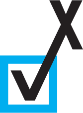

Revery
Revery
Revery is a desktop GUI framework largely inspired by Flutter and Electron.
The framework is written in ReasonML and compiles to native code, using a
React-like API to make development simple. The components are implemented in
OpenGL/WebGL to allow for a seamless experience across all platforms in the
same way that Electron and Flutter provide. The project was originally created
by
Bryan Phelps, and I'm one of many
collaborators for the project.
Quartz
Quartz is a research project that aims to create a strongly-typed language for
the world of message-passing, concurrent code. Largely inspired by the Alpaca
project, which aims to give Erlang static typing, Quartz attempts to apply
multiparty session type theory to Erlang-style code. In order to do so, the
compiler implements a novel type inference/type checking algorithm based on
Pierre-Malo Deniélou's and Nobuko
Yoshida's research into global session type synthesis. The language itself
is based loosely on Ruby and Elixir and compiles to Erlang code, but is designed
around a new paradigm for actor programming using first-class session objects.

Rolltrax
Rolltrax started in late 2017 when my Work-Based Learning teacher, Brian
Patterson, brought up the many challenges of having student interns to me and
my friend
Zach Baylin. Together, the three
of began implementing a website for managing off-campus students' attendance.
This quickly involved into a full-fledged app, complete with user-customizable
dashboards to view metrics about student performance, a route manager for
teachers travelling between job locations, and tools for employers to evaluate
students' performance. The latest revision of the web app is written in Crystal
(using Kemal) and ReasonML (using ReasonReact), while the mobile app is written
in Flutter.
Nanocaml
Having been interested in compiler design for a while, I was intrigued when the
idea of nanopass architecture was first brought up to me. This style of writing
compilers utilizes a large number of passes, each of which performs only a tiny
transformation on the input program. After watching a talk and using the Racket
nanopass library for a school project, I became inspired to design a similar
system for OCaml. Using a PPX preprocessor, my friend
Milo Turner and I whipped up a quick
prototype of what such a library could look like. Though not yet battle-tested,
this library provides a number of powerful abstractions for writing compilers
quickly and easily.
Kesef
Over the summer of 2018, I became very interested in learning about finance. As
part of this, I spent quite some time learning about financial statements such
as those found in the 10-k/q SEC filings. To make browsing these forms easier,
I used Perl6 to create a program called Kesef, which used a web scraper and RSS
feeds to create a database of company filings. I also added some more features,
such as rudimentary parsing of the XBRL documents to create tables of financial
data and sourcing trading information from the IEX Trading API.
 Bibliotech
Bibliotech
During my senior year of high school, I competed in FBLA's Mobile Application
Development competition with
Zach Baylin and
Eric Miller. For the competition, we
were tasked with creating an app for browsing and checking out library books.
After a failed first attempt using the Jasonette framework, we switched to
Flutter (and fell in love with it!). The backend of the app was implemented in
Ruby using Sinatra and PostgreSQL.